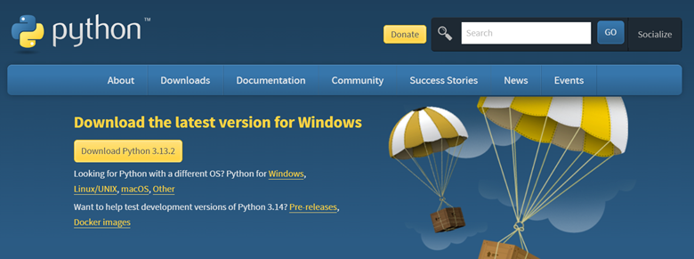
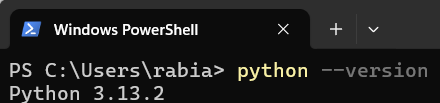
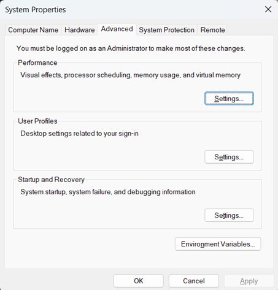

This guide will walk you through installing Python 3 on Windows 11, adding it to PATH, and verifying the installation using PowerShell. By the end, you’ll be able to run Python scripts and check your installation with simple commands.
Open your web browser and go to the official Python website: https://www.python.org/downloads/
Click the “Download Python 3.x.x” button under “Download the latest version for Windows” (this will download the latest stable version).
Open your downloads folder, then double click on the installer “python-3.x.x-amd64.exe”.
Once the installer is open:
C:\Users\rabia\AppData\Local\Programs\Python\Python313 *Important*Open PowerShell.
Run the command python --version or python3 --version.
If your output is something like ‚ÄúPython 3.x.x‚Äù then Python was installed and configured correctly. You are good to go! üòä
If your output is something like ‚ÄúPython was not found ‚Ķ‚Äù or ‚ÄúPython is not recognized ‚Ķ‚Äù, restart your computer and run python --version or python3 --version again. If it still does not work, move on to step 4 :(
Open Windows Search and type "Environment Variables", then select "Edit the system environment variables".
Select “Environment Variables” near the bottom of the screen.
Double click “Path” under “User variables for your_username”.
Click “New”.
Write the PATH you recorded in Step 2, adding a “\Scripts” to the end of it. For example, if your path was C:\Users\rabia\AppData\Local\Programs\Python\Python313, then add: C:\Users\rabia\AppData\Local\Programs\Python\Python313\Scripts.
Restart your computer and run python --version or python3 --version.